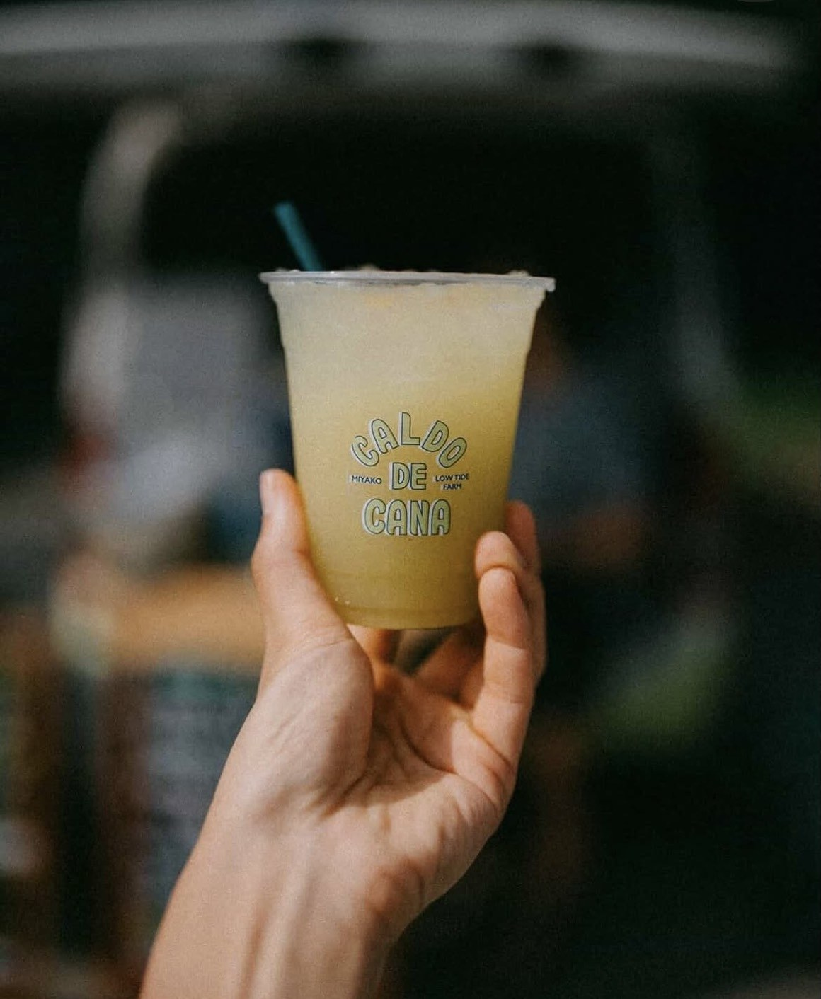
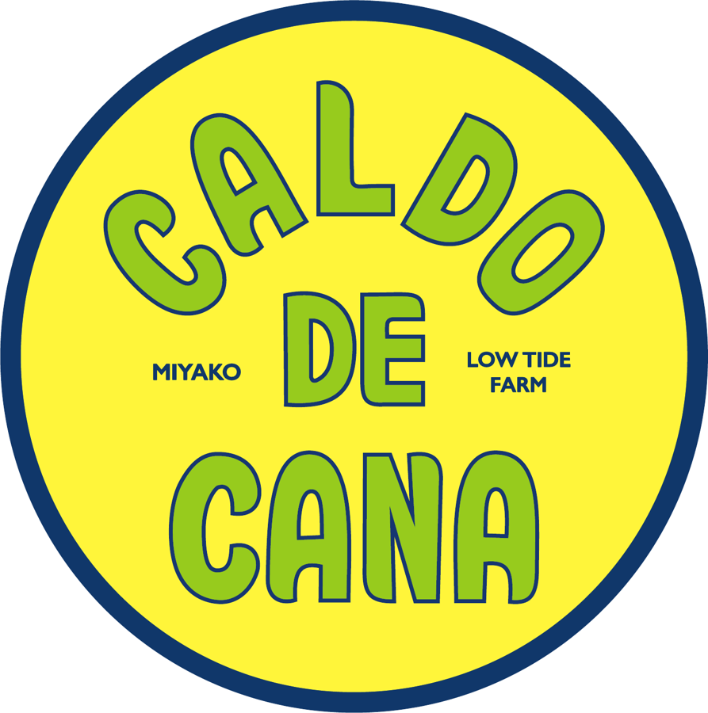
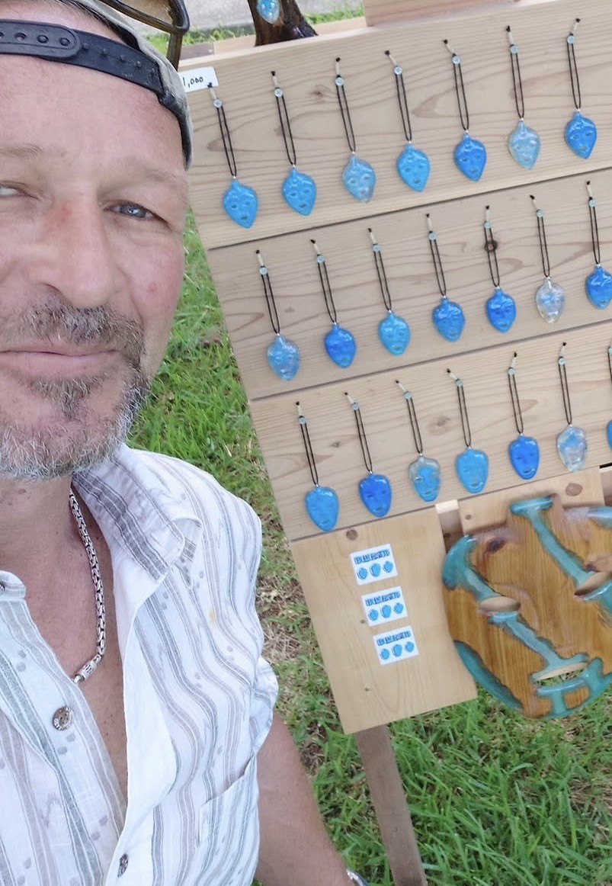

Your Island, Your Pace自分のペースで、宮古島を
Miyakojima places worth saving.保存しておきたい宮古島の場所。
A lunch stop, a small shop, somewhere to unwind. Browse by category or area, and save a few places for your island day. お昼ごはん、小さなお店、ひと息つける場所。カテゴリーやエリアから探して、気になる場所を旅のお気に入りに。
Browse by categoryカテゴリーから探す
A Little Help Choosingおすすめ選びをお手伝い
Find Your Miyakojima Matchあなたに合う宮古島を探す
Choose what sounds right today. My Miyakojima will suggest a few places from the curated guide.
今日の気分に近いものを選ぶと、厳選ガイドからおすすめをご提案します。
Explore by areaエリアから探す
Areas reflect the addresses and meeting points in this guide. Mobile businesses and stockists may change location.掲載済みの住所や集合場所をもとにまとめています。移動販売や委託販売店の情報は変更になる場合があります。
Local Food ローカルフード
Long-standing local kitchens and modern spots that reflect everyday life in Miyakojima.
宮古島の日常に寄り添う、昔から愛されるお店と新しいローカルスポット。

Pizza Doraku ピザ道楽
One of the oldest pizza restaurants in Miyakojima, loved by locals for generations.
宮古島で長く愛されている老舗ピザ店。
Learn more → 詳しく見る
Captain Marian キャプテンメリアン
A famous Miyakojima steakhouse for Miyako beef, generous steak plates, and a memorable red-tile kominka atmosphere.
宮古牛やステーキを楽しめる、赤瓦の古民家空間が印象的な宮古島の有名ステーキハウス。
Learn more → 詳しく見る
Hirochan Shokudo お食事処 ひろちゃん
A long-loved family-run restaurant in Ueno near the Shigira area, serving easy local comfort food for island residents and travelers.
シギラエリアに近い上野で長く親しまれてきた、地元の方にも旅行者にもやさしい家族経営の食堂。
Learn more → 詳しく見る

Caldo de Cana カルド・デ・カナ
A bright Miyakojima sugarcane drink stand by Low Tide Farm, perfect for a refreshing island stop near the sea.
Low Tide Farmが手がける、宮古島らしいさとうきびドリンクのスタンド。海へ向かう途中の爽やかな寄り道に。
Learn more → 詳しく見る
Galle 385 ガレ385
Crispy pie cream puffs, weekend sweets at Coworking Space MUGI, and a 24-hour frozen sweets vending machine.
サクサクのパイシュー、MUGIでの週末販売、24時間営業の冷凍スイーツ自販機。
Learn more → 詳しく見る
Tonkatsu Ichiban とんかつ一番
A pioneer of tonkatsu in Miyakojima, known for its original flavor and long-standing local trust.
宮古島のとんかつ文化を支えてきた、信頼の老舗店。
Learn more → 詳しく見る
Pa-ra-jiro ぱーら二郎
A local bento and sozai shop loved for affordable comfort food that often sells out quickly.
手に取りやすい価格と満足感のある味で地元に愛される、お弁当と惣菜のお店。
Learn more → 詳しく見る
Burwood Donuts バーウッドドーナツ
Handmade donuts and coffee, quietly becoming part of everyday island life.
手作りドーナツとコーヒーで、宮古島の日常に寄り添うお店。
Learn more → 詳しく見るMarine Activities マリンアクティビティ
Ocean experiences and marine activities in Miyakojima.
宮古島の海を楽しむマリンアクティビティ。

I Love Miyakojima アイラブ宮古島
Relaxed small-group Yabiji snorkeling with a licensed PADI instructor, lunch, drinks, and edited Insta360 video included.
PADIインストラクターが案内する少人数制の八重干瀬シュノーケリング。ランチ、ドリンク、編集済みInsta360動画付き。
Contact: 080-5188-8005 お問い合わせ：080-5188-8005
Learn more → 詳しく見る
NII Marine NIIマリン
Jet ski rentals and marine activities to experience Miyakojima’s ocean.
宮古島の海を楽しめるジェットスキーやマリン体験。
Learn more → 詳しく見るStays 宿泊
Quiet places to stay, chosen for atmosphere, comfort, and connection to Miyakojima.
宮古島の空気を感じられる、落ち着いた宿泊施設を紹介します。

TOPPURI トップリ
Now open with six private rooms, island dining, a private bar, sauna, breakfast, and quiet Miyakojima nights in Bora, Gusukube.
城辺保良にオープン。6棟のプライベートな客室、島のディナー、プライベートバー、サウナ、朝食、そして静かな宮古島の夜を楽しめる新しい滞在先です。
Explore the stay -> 滞在情報を見る
UMIOTO log ウミオトログ
A private log house stay surrounded by nature, offering a quiet and spacious escape in Miyakojima.
自然に囲まれた一棟貸しのログハウスで、 宮古島の静かな時間をゆったりと過ごせる宿泊施設です。
Learn more → 詳しく見る
MAHHO TERRACE マホーテラス
A cafe-hostel in the heart of Miyakojima, offering a clean, simple, and comfortable base for travelers.
宮古島の中心地にあるカフェ併設のゲストハウス。 シンプルで快適に過ごせる、ちょうどいい距離感の宿です。
Learn more → 詳しく見るTransportation 移動・レンタル
Getting around and exploring Miyakojima with ease.
宮古島での移動やアクティビティをサポートするサービス。

Coral Rent a Car コーラルレンタカー
Affordable rental cars for exploring Miyakojima freely and comfortably.
宮古島を自由に巡るためのレンタカーサービス。
Learn more → 詳しく見る
Pine Rent a Car パインレンタカー
Reliable and flexible rental options for your stay in Miyakojima.
宮古島での滞在に合わせた柔軟なレンタカーサービス。
Learn more → 詳しく見るWellness ウェルネス
Restorative spaces, calm care, and wellness support for your island days.
島で過ごす時間をより心地よく整える、癒しの空間とウェルネスサポート。

Hawaiian Lomi Lomi Pono ハワイアンロミロミ＆リラクゼーション ポノ
A private sea-side lomi lomi relaxation salon for travelers who want to slow down and feel cared for in Miyakojima.
宮古島の海を感じる貸切空間で、ゆっくり心と身体を整えられるハワイアンロミロミサロン。
View feature → 詳しく見る
Hair Salon Sanin ヘアサロン サニン
A calm Miyakojima salon shaped by Mica's thoughtful care, natural highlights, and a relaxed island rhythm.
Micaさんのやさしい感性と、自然なハイライト、島のゆったりした空気を感じる宮古島のヘアサロン。
View feature → 詳しく見る
LUNA SPA Miyakojima 宮古島 LUNA SPA
Ran creates quiet, personal time for women to reconnect with their minds and bodies in Miyakojima.
蘭さんが届ける、心と身体にそっと向き合うためのプライベートなウェルネス時間。
View feature → 詳しく見るLifewave ライフウェーブ
Simple wellness tools designed to support energy, recovery, and daily balance.
日々のバランスやリカバリーをサポートする、シンプルなウェルネスアイテム。
Learn more → 詳しく見るIsland Lifestyle ライフスタイル
Objects, spaces, and pieces that reflect the everyday feeling of Miyakojima.
宮古島の暮らしや空気感を感じられるものやお店。

Laso Laso ラソラソ
A colorful select shop in Miyakojima offering handmade items, vintage clothing, and carefully selected goods from Japan and abroad.
ハンドメイド作品や古着、国内外からセレクトした雑貨が並ぶ、 宮古島のカラフルなセレクトショップ。
Learn more → 詳しく見る
GGS GAKUGAKU ジージーエス ガクガク
Handmade tile magnets, coasters, and canvas art inspired by Miyakojima's sea colors and small island memories.
宮古島の海の色や島の記憶から生まれる、タイルマグネット、コースター、キャンバスアートなどのハンドメイド作品。
Learn more → 詳しく見る
Guru Guru Glass グルグルグラス
A mini glass shop and workshop in Miyakojima where Makoto creates playful ocean-colored accessories, turtles, pendants, earrings, and custom pieces.
誠さんが手がける、宮古島メイドのミニガラスショップ。海の色を感じるアクセサリー、カメ、ペンダント、ピアス、オーダーメイド作品など。
Learn more → 詳しく見るIsland Creators 島のクリエイター
Creative Friends to Follow 宮古島で出会ったクリエイティブな友人たち
Artists and culture makers without a regular storefront, but very much part of Miyakojima's creative life.
常設店舗に限らず、宮古島のクリエイティブな空気をつくっている人たちを紹介します。

Blu Pantu ブルー・パントゥ
An island-inspired artist whose blue symbolic world carries Miyakojima mythology, ocean feeling, and playful identity.
宮古島の神話や海の気配、遊び心あるアイデンティティを青の世界で表現するアーティスト。
View feature → 詳しく見る
Masa マサ
A Miyakojima-based singer whose music, live performances, and beach-clean work carry a warm island spirit.
音楽、ライブ活動、ビーチクリーンを通して、宮古島への想いを届けるシンガー。
View feature → 詳しく見るWeddings & Celebrationsウェディング・お祝い
People to help you celebrate a new chapter on Miyakojima.
宮古島で、大切な節目を一緒につくる人たち。

Kounotori Wedding幸の鳥Wedding
Wedding ceremonies, parties and photo weddings, shaped around the people and the love that brings them together.
挙式、パーティー、フォトウェディング。大切な人たちに愛を伝える、宮古島での一日をプロデュース。
Explore the businessサービス・連絡先を見る